Generates plots for mlr3::PredictionRegr, depending on argument type:
"xy"(default): Scatterplot of "true" response vs. "predicted" response. By default a linear model is fitted viageom_smooth(method = "lm")to visualize the trend between x and y (by default colored blue).In addition
geom_abline()withslope = 1is added to the plot.Note that
geom_smooth()andgeom_abline()may overlap, depending on the given data.
"histogram": Histogram of residuals: \(r = y - \hat{y}\)."residual": Plot of the residuals, with the response \(\hat{y}\) on the "x" and the residuals on the "y" axis.By default a linear model is fitted via
geom_smooth(method = "lm")to visualize the trend between x and y (by default colored blue).
# S3 method for PredictionRegr autoplot(object, type = "xy", ...)
Arguments
| object | |
|---|---|
| type | (character(1)): |
| ... | ( |
Value
ggplot2::ggplot() object.
Examples
library(mlr3) library(mlr3viz) task = tsk("boston_housing") learner = lrn("regr.rpart") object = learner$train(task)$predict(task) head(fortify(object))#> row_ids truth response #> 1: 1 24.0 23.72519 #> 2: 2 21.6 19.55954 #> 3: 3 34.7 35.10313 #> 4: 4 33.4 35.10313 #> 5: 5 36.2 35.10313 #> 6: 6 28.7 29.98333#>#>